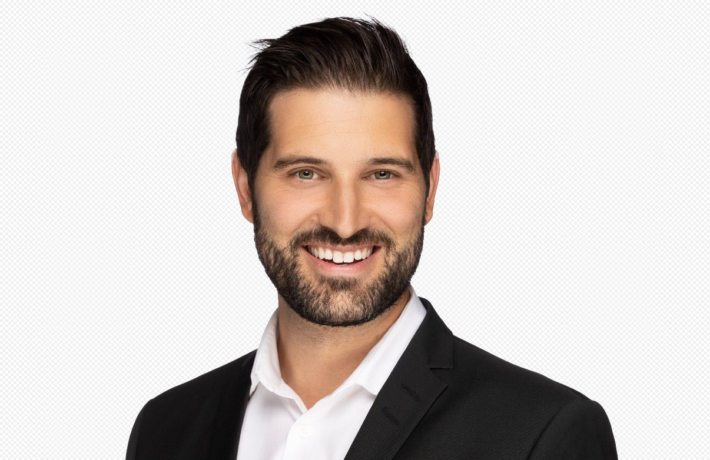
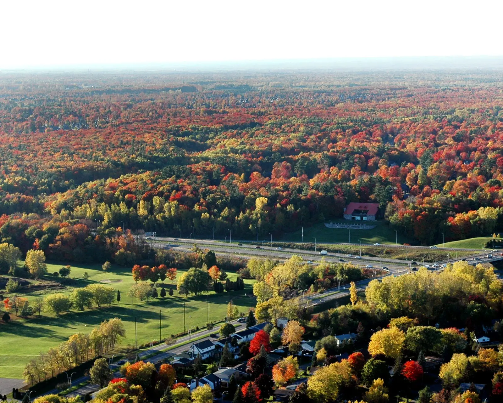
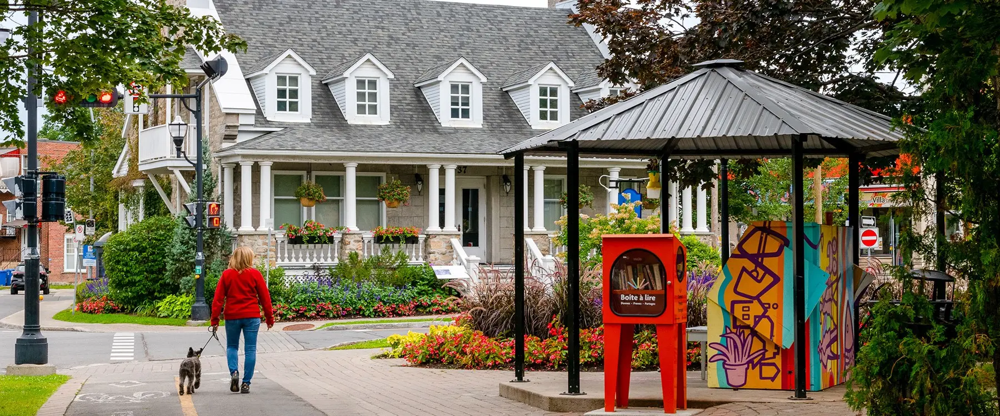
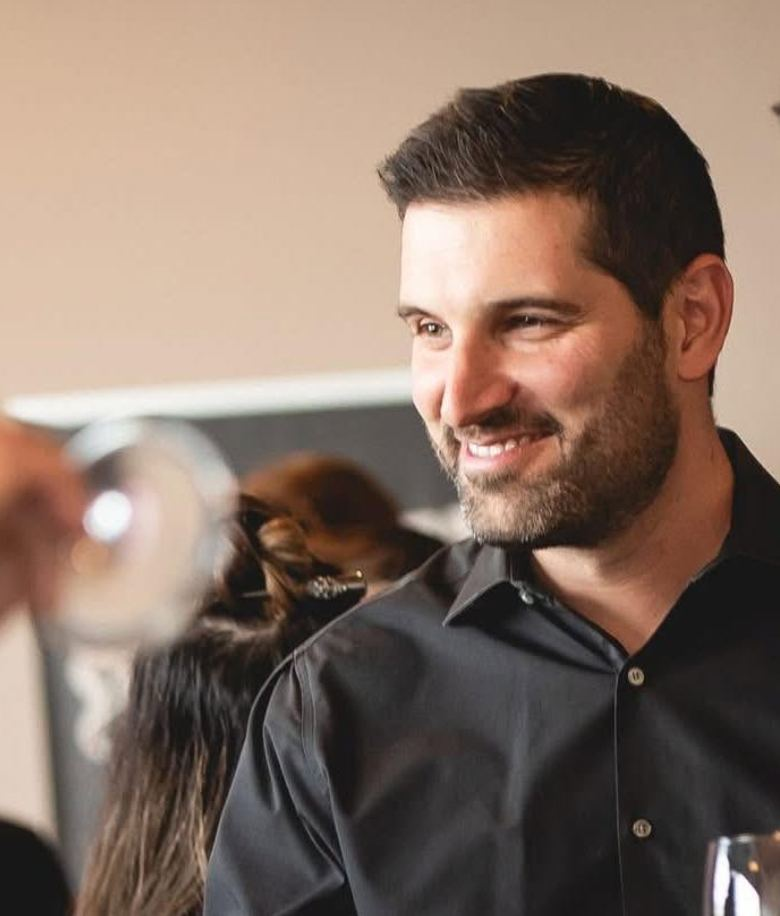
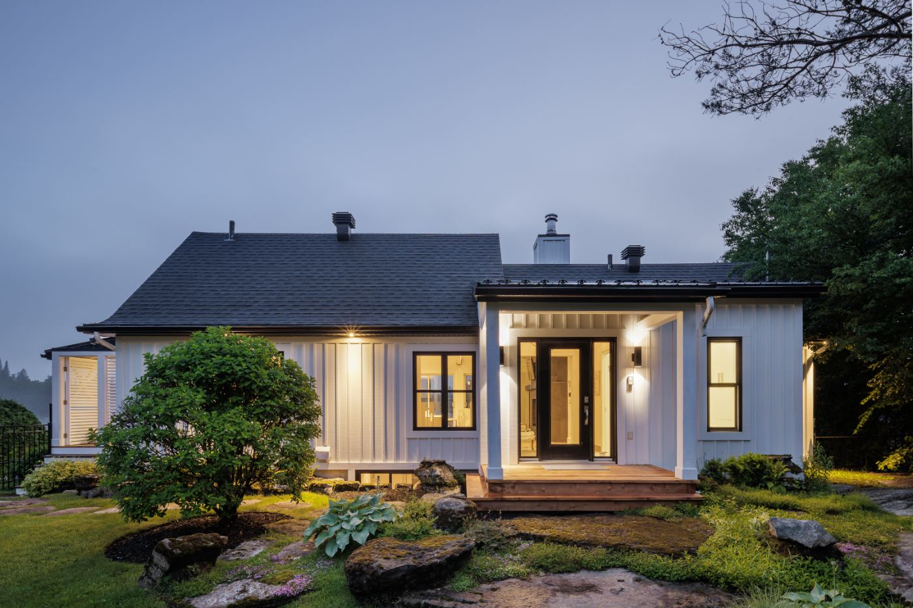
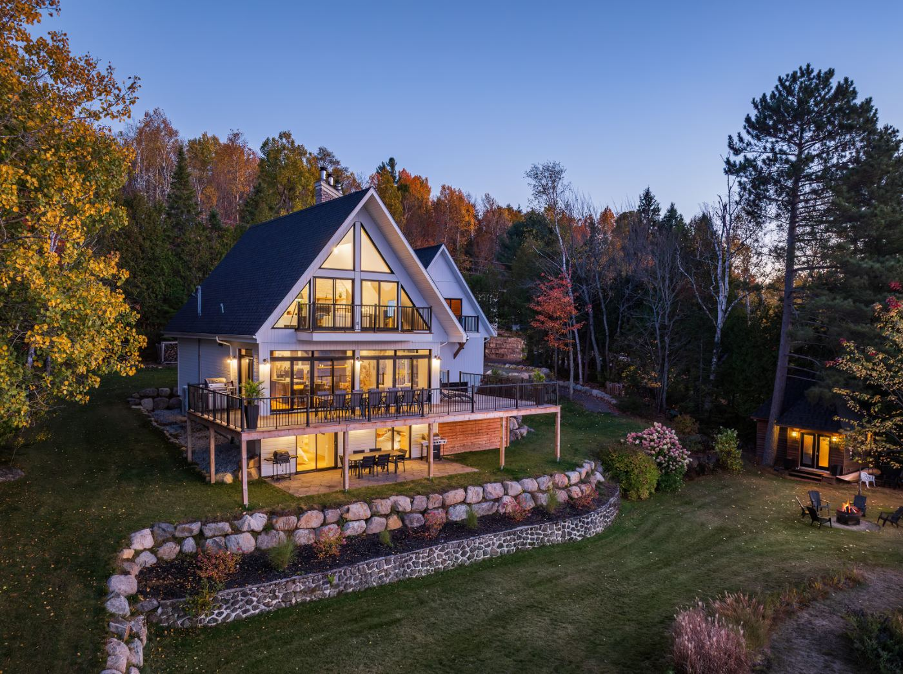
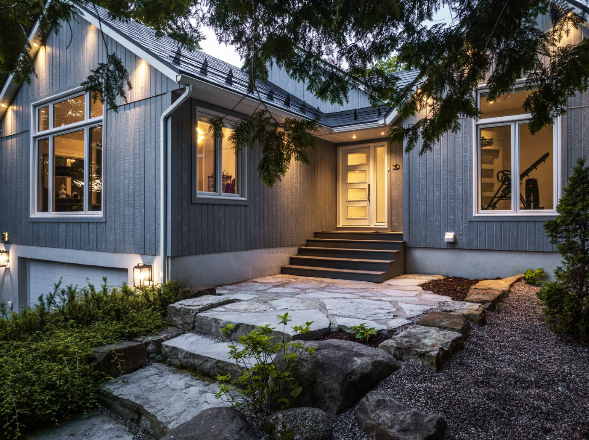

Courtier immobilier résidentiel et commercial · Permis OACIQ G7950
Maxime Beaulac, courtier immobilier à Lorraine
Maxime Beaulac est courtier immobilier résidentiel et commercial chez RE/MAX Crystal, actif à Lorraine, à Rosemère et à Sainte-Thérèse depuis 2016. Ses 30 dernières propriétés vendues se sont conclues à 98,3 % du prix demandé, en 33 jours en moyenne.


- Du prix demandé, sur ses 30 dernières ventes
- 98,3 %
- Jours de mise en marché en moyenne
- 33
- Ans comme courtier sous la bannière RE/MAX
- 10
- Secteurs
- Lorraine, Rosemère, Sainte-Thérèse
- Langues
- Français, anglais
- Bureau d'attache
- RE/MAX Crystal, Sainte-Thérèse
- Reconnaissances
- RE/MAX Hall of Fame, Lifetime Achievement, Club Chairman
Le service, appris à la maison
Un courtier formé par les chantiers, les promoteurs et deux parents entrepreneurs.
Pour Maxime Beaulac, le service à la clientèle n'est pas un métier appris : c'est un héritage de famille.
Il a grandi en regardant ses parents mener leur carrière, jusqu'à des postes de direction, puis bâtir une entreprise de services fondée sur la confiance. Il dit à la blague être un adepte du service à la clientèle depuis sa naissance, et ajoute qu'il y a une grande part de vérité là-dedans.
Avant le courtage, il a cumulé plus de 15 années d'expérience dans la vente. Il a travaillé en rénovation résidentielle, puis sur de grands projets avec des promoteurs, des constructeurs, des architectes et des ingénieurs. Ce parcours lui a appris à lire un bâtiment, à parler le langage des entrepreneurs et à s'entourer de personnes clés qui l'aident aujourd'hui à bien représenter ses clients, qu'ils vendent ou qu'ils cherchent leur prochain chez-soi.
Son but tient en une phrase : vous faciliter la vie et vous obtenir les meilleures conditions lors de votre transaction. Il se décrit comme dédié et travaillant, avec une intégrité sans reproche.
Ses chiffres appuient la méthode. Les 30 dernières propriétés qu'il a vendues se sont conclues à 98,3 % du prix demandé et en 33 jours en moyenne. Il ajoute à sa mise en marché les derniers outils technologiques disponibles, du marketing à la fine pointe jusqu'à la photo et la vidéo professionnelles, et il propose le home staging quand il aide à présenter la propriété.
Maxime accompagne des acheteurs et des vendeurs dans l'unifamiliale, le condo, le plex, la propriété de prestige et l'investissement, en résidentiel comme en commercial. Un réseau d'entrepreneurs et de notaires l'aide à boucler chaque dossier.
Ses résultats, en trois chiffres
Des données de ses propres ventes, pas des promesses générales.
- 98,3 %
Un prix demandé presque toujours obtenu
Sur ses 30 dernières propriétés vendues, le prix de vente a atteint en moyenne 98,3 % du prix demandé.
- 33 jours
Une vente conclue en un peu plus d'un mois
C'est le délai moyen de ces mêmes 30 ventes.
- 10 ans
Une décennie sous la même bannière
Maxime est courtier RE/MAX depuis 10 ans et compte parmi ses reconnaissances le Hall of Fame, le Lifetime Achievement et le Club Chairman.

Ville principale
Lorraine
Sa ville depuis 7 ans, après presque 20 ans passés à Rosemère.
Lorraine et ses parcs
Maxime a habité Rosemère près de 20 ans, puis s'est installé à Lorraine il y a 7 ans. Il connaît les trois villes de l'intérieur.
Des sentiers qui mènent partout
À Lorraine, des sentiers donnent sur des dizaines de parcs un peu partout dans la ville. Au centre, le parc central rassemble les deux écoles et fait vivre le quartier durant la belle saison.
Rosemère, la commodité et le cachet
Le train, les commerces à proximité et le centre commercial rendent le quotidien pratique. Le Vieux-Rosemère ajoute son charme. Maxime y a fréquenté l'école Alpha, l'Externat Sacré-Cœur et le cégep Lionel-Groulx.
Sainte-Thérèse, la plus montréalaise
Maxime la décrit comme la banlieue la plus montréalaise : de petits cafés, un village et des restaurants de style joint.
Là où Maxime habite depuis 7 ans, entre sentiers, parcs et vie de quartier.
Lire le guide de Lorraine Aussi desservieRosemèreLà où il a vécu près de 20 ans : train, commerces et Vieux-Rosemère.
Lire le guide
Aussi desservieSainte-ThérèseLa banlieue au style le plus montréalais, avec son village et ses cafés.
Lire le guideMaxime et ses mises en marché
Un portrait de Maxime, puis des propriétés présentées au crépuscule.




Questions fréquentes
Les réponses de Maxime, lisibles sans le reste de la page.
Quel pourcentage de rétribution Maxime Beaulac demande-t-il ?
Maxime Beaulac, courtier chez RE/MAX Crystal, n'applique pas un seul pourcentage de rétribution. Chaque propriété exige une mise en marché unique avec des besoins uniques, et la rétribution se discute en fonction de ce plan.
Est-ce un bon moment pour vendre ou acheter à Lorraine et dans les environs ?
Selon Maxime Beaulac, c'est toujours un bon moment pour vendre, surtout si la propriété a été achetée avant ou pendant la Covid, car le marché a été très bénéfique aux propriétaires d'avant 2023. Pour les acheteurs, le marché se stabilise et aucune hausse fulgurante n'est prévue, mais la hausse des taux d'intérêt joue contre eux.
Je ne suis pas pressé de vendre ma maison. Que faire ?
Ce n'est pas un problème, répond Maxime Beaulac : l'important est d'avoir un bon plan de match pour être prêt lorsque la bonne occasion se présentera.
Ses propriétés à vendre
Les inscriptions de Maxime Beaulac sont affichées sur Centris.
Mes clients, dans leurs mots
Trois clients de Sainte-Thérèse et de Rosemère, dont un en anglais.
Merci Maxime pour l’excellent travail pour la vente et l’achat d’une nouvelle maison.
A notre première rencontre, je t’ai demandé de me simplifier la vie. Et c’est ce que tu a réussi à faire avec brio.Maxime a grandement contribué au succès de la vente de ma maison. Je souligne son soutien dans toutes les étapes de la transaction ainsi que son calme et sa patience dans les imprévus qui se sont présentés. Je le recommande avec grande mention!
I have sold and bought multiple houses and commercial place with Max & Fred over the years and I have always been extremely satisfied. Their level of professionalism, dedication and communication is unparalleled. They have a deep understanding of the market, are extremely precise on values and delivered every time. I strongly recommend their team to support you in either selling or buying a new house or commercial space. Responsiveness is key to success!
Vendre ou acheter avec moi
Résidentiel et commercial, avec une mise en marché adaptée à chaque propriété.
Vendeurs
Une mise en marché unique pour chaque propriété.
- Mise en marché complète, avec les derniers outils technologiques
- Photos et vidéo professionnelles
- Home staging
- Analyse comparative de marché
- Réseau d'entrepreneurs et de notaires
Acheteurs
Un accompagnement pour l'achat d'une résidence ou d'un immeuble.
- Accompagnement d'acheteur, du premier achat à l'investissement
- Unifamiliales, condos, plex et propriétés de prestige
- Évaluation de la valeur selon l'analyse comparative
- Mise en relation avec des entrepreneurs de confiance
- Immobilier commercial
On en parle ?
Appelez Maxime pour discuter de votre projet, ou écrivez-lui pour demander une évaluation gratuite.
- Courtier
- Maxime Beaulac, courtier immobilier résidentiel et commercial
Permis OACIQ G7950 - Bureau
- RE/MAX Crystal
228 boul. du Curé-Labelle
Sainte-Thérèse (QC) J7E 2X7 - Téléphones
- Cellulaire : 514 219-3383
Bureau : 450 430-4207 - Courriel
- maxime@beau-lac.com